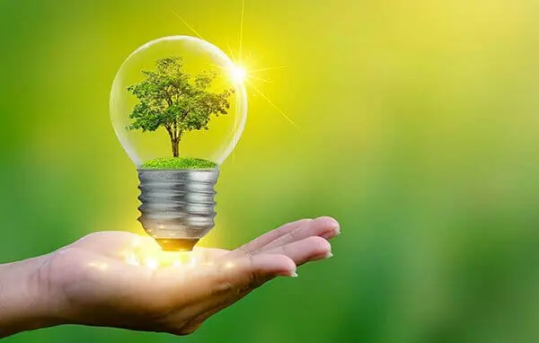

Energy Conservation Benefits

1. Environmental Benefits
1.1 Lower Carbon Emissions
- Conserving energy reduces the need to burn fossil fuels for electricity or heat, significantly cutting carbon dioxide (CO₂) emissions.
- This helps slow global warming and reduces the intensity of climate-related disasters, such as hurricanes, floods, and wildfires.
1.2 Preservation of Natural Resources
- By using less energy, we rely less on the extraction and use of non-renewable resources such as coal, oil, and natural gas.
- Conservation also reduces deforestation, mining, and habitat destruction associated with energy production.
1.3 Reduced Pollution
- Energy production is a major source of air, water, and soil pollution. Conserving energy minimizes harmful emissions like sulfur dioxide, nitrogen oxides, and particulate matter, improving overall environmental health.
2. Economic Benefits
2.1 Significant Cost Savings
- For households: Lower electricity, gas, and water bills. For example, turning off unnecessary lights can save hundreds of dollars annually.
- For businesses: Reduced energy consumption translates into lower operating costs and higher profitability.
2.2 Lower Infrastructure Costs
- Conservation reduces the strain on power plants, grids, and pipelines. This delays the need for costly upgrades or expansions of energy infrastructure.
2.3 Energy Price Stabilization
- When demand for energy decreases, supply is less stressed, and prices are less likely to spike during peak times or crises.
2.4 Boosts Energy Security
- By conserving energy, countries can reduce their reliance on imported fuels, making them less vulnerable to geopolitical tensions and supply disruptions.
3. Social Benefits
3.1 Improved Public Health
- Reduced energy production leads to cleaner air and water, decreasing health risks associated with pollution, such as respiratory illnesses, cardiovascular diseases, and cancer.
3.2 Enhanced Energy Access
- Conservation ensures energy is available for more people, especially in areas with limited or unstable power supplies.
- It can help alleviate energy poverty by making resources available to underserved communities.
3.3 Fostering Awareness and Responsibility
- Promotes a culture of sustainability, encouraging individuals and communities to think critically about their energy usage and environmental impact.
3.4 Better Quality of Life
- Communities that prioritize energy conservation often benefit from improved infrastructure, cleaner public spaces, and more efficient use of shared resources.
4. Long-Term Benefits
4.1 Mitigating Climate Change
- Every small action, like turning off unused appliances or using public transportation, contributes to reducing global emissions, slowing climate change, and minimizing its severe impacts on ecosystems and societies.
4.2 Resource Sustainability
- By conserving energy, we extend the lifespan of finite resources, allowing future generations to meet their energy needs.
4.3 Building Resilient Energy Systems
- Lower demand reduces stress on energy grids, preventing blackouts and making systems more reliable during peak periods or emergencies.
4.4 Energy Conservation as a Gateway to Renewable Energy
- Reduced energy consumption makes it easier to transition to renewable sources like solar and wind, which can supply a larger share of our needs.